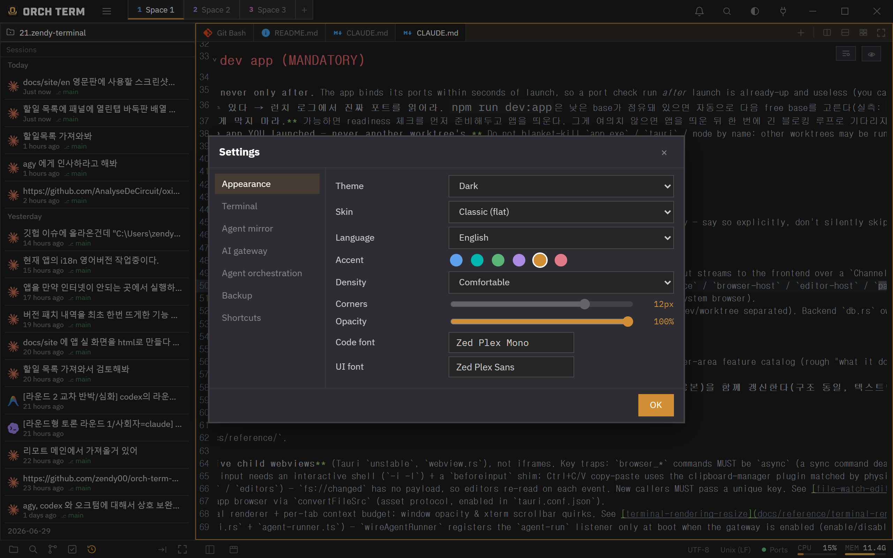
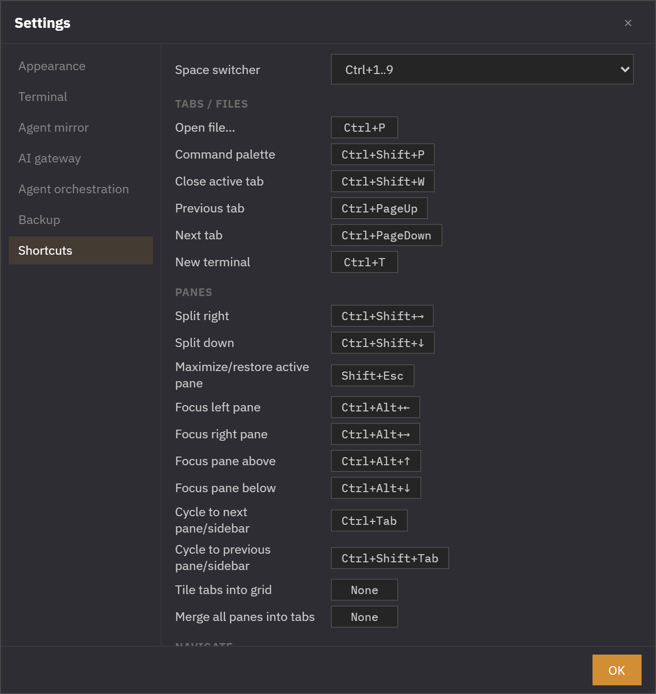
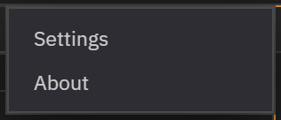
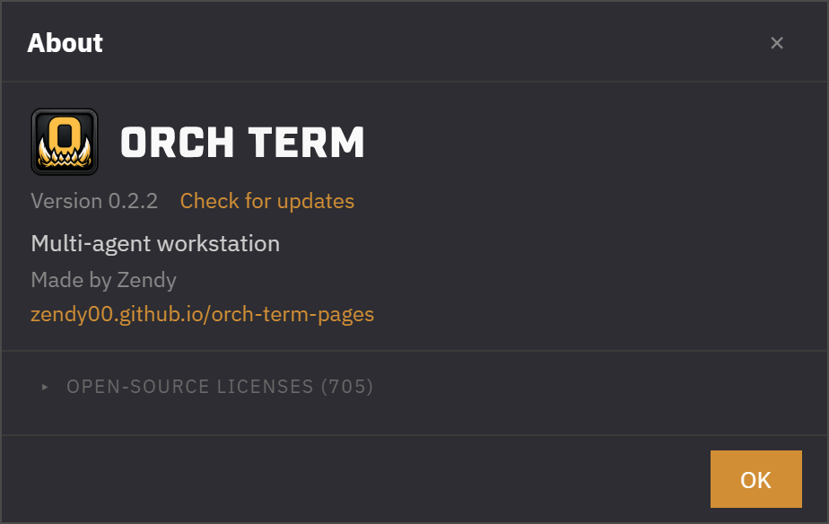

More · System
Appearance · Fonts · Shortcuts
Tune the app's look and feel to your taste. Pick a coding font with a live preview, adjust window opacity, and reassign keyboard shortcuts — all from the hamburger menu → Settings.
Picking a font
In the settings Code font and UI font pickers, choose from bundled fonts together with installed system fonts. Each row is a sample drawn in that font, so you can visually compare Korean glyph widths and how clearly il1Lo0 are distinguished. The code font picker shows monospace only, while the UI font picker shows them all.

Window opacity
A single slider makes the whole window translucent. Main surfaces like the Explorer, headers, and editor body fade together, while menus, modals, and palettes stay crisp for readability.
Status bar
Use the button on the left of the bottom status bar to toggle the Explorer; on the right, the file encoding (UTF-8, etc.) is shown when an editor tab is active.
Settings dialog
Open it from the hamburger menu → Settings. Move between the Appearance, Terminal, Shortcuts, and Backup groups via the left nav, and change values in the right panel.
From the Backup tab you can export settings to a file and import them. Import only applies settings the app recognizes, blocking dangerous values from external files.
Reassign keyboard shortcuts
In the settings Shortcuts section, click a row and press the keys you want to reassign it. It works regardless of keyboard layout, and if it clashes with another command or a fixed shortcut it's shown in red and saving is blocked.

Hamburger menu · About
Click the hamburger at the top left of the titlebar to bring up Settings and About. The button on the right cycles the theme dark → midnight → light.

About shows the brand, version, author, and the list of open-source licenses. Licenses are gathered automatically at build time and are collapsed by default — expand them when you need them.

Keyboard shortcuts
| Key | Action |
|---|---|
| Ctrl+Shift+P | Command palette |
| Ctrl+P | File search palette |
| Esc | Close menu · dropdown |